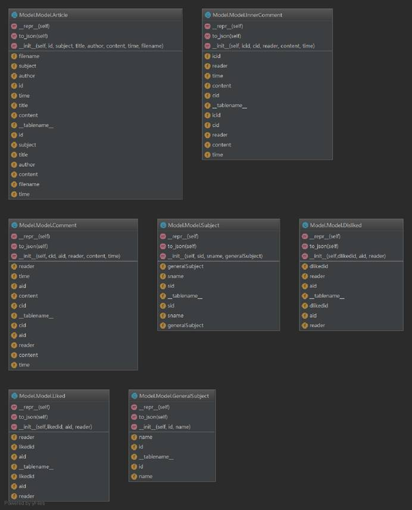

Use Case
Name: Submit an article
Description:
The author uses the Open Access Publishing service to contribute new articles.
Preconditions:
The author is a real person, not a bot.
Postconditions:
The author will submit an article if he/she is eligible.
Basic Course of Action:
1.The use case begins when an author wants to submit an article.
2.The author click the button “publish a new article.
3.The author select the General Subject and the Special Subject.
4.The author input the Tittle, the Abstract and his/her email address into the service.
5. The author select the article which is PDF file from his/her computer and click the button “upload the file”
6.The author click the button “PUBLISH NOW” to service.
7.The service records the publish time likes yyyy-mm-dd hh:mm.
8. The service verifies the email address is valid.
9.The service verifies the author is eligible and verifies if the author’s email address is blacklisted for a period of time by the service administrator.
10.The service verifies all required fields is filled in.
11.The service verifies the subject is chosen.
12.The service checks the article submission form.
13. The service insert the file and the information of the file into the database
14.The service informs the author submit the article successful.
15.The use case ends when the author takes the successful information.
Alternate Course A: Some required fields are not filled out
A.1.The server determines the author is not filled in all required.
A.2.The page informs the author he/she is not filled in all required.
A.3.The use case continues at Step4 in the basic course of action.
Alternate Course B: An invalid email address is provided
B.4.The server determines the author’s email address is invalid.
B.5.The page informs the author his/her email address is invalid.
B.6. The use case continues at Step4 in the basic course of action.
Alternate Course C: The file format is not PDF.
C.7.When the author selects the file, he/she will can not find the file which is not a PDF file.
C.8.The use case ends.
Alternate Course D: No subject is chosen.
D.9.The server determines the author is not chose a subject.
D.10.The page informs the author is not chose a subject.
D.11. The use case continues at Step3 in the basic course of action.
Alternate Course E: Contain inappropriate words in the article submission form.
E.12.The server determines the article submission form contain inappropriate.
E.13.The page warns the author is write inappropriate words.
E.14. The use case continues at Step4 in the basic course of action.
Class Diagram
1.How did I come up with the current classes and why?
①The project descript the authors can use the service to share their articles, so we need a class to save information and action of articles called “Article”.
②The project descript the articles have a generalsubject and a subject, so we need two classes to save information and perform action of subject called “GeneralSubject” and “Subject” .
③The project descript the articles published to the service can be commented by unlimited number of reviewers, so we need two classes to save information and perform action of subject called “Comment” and “InnerComment” .
④The project descript each article, as well as each comment, can be up-voted or down-voted, so we need two classes to save information and perform action of subject called “Liked” and “Dislike” .
2.Are there any reconstructions/revisions?
We don’t have any reconstruction/revisions, because the project description is vary clear and our pre-planning is good.
3.What are the interactions between classes/objects?
①The all classes have a same method “to_jscn” to interact with object. The sqlalchemy does not provide a serialization method, so we need to serialize the data which we query.
② The Article class has a method “__repr__” to interact with object. Implement class to string conversion.
4.What is the relationship between two classes. Inheritance, composition or aggregation? Or something else.
We don’t have any relationship between classes.
Database schema
Code quality
(1) Maintainability Index (MI) of service.py as returned by radon mi -s service.py.
Answer:
app.py - A (38.16)
(2) Scalability. Will your design/implementation work for thousands of users publishing tens of thousands of papers over a period of ten years. If yes, answer why and how?
Answer:
Yes. Because when an Open Access Publishing Service building and it is free, it will be more and more popular and a lot of people will hope to download the file what they need from the service or display they ideals.
The ways about how to realize are listed as follows.
1.Prepare a better and big server and not using cloud server. And the server will have professional person to maintain.
2.We will keep updating our code, let it more reasonable and deduce bugs.
3. We hope it can be multithreading.
Then the tasks that take up a long time in a program can be handled in the background, user interface can be more attractive and programs may run faster.
4.We will expand the databases. Then the database can fill in all what we need,